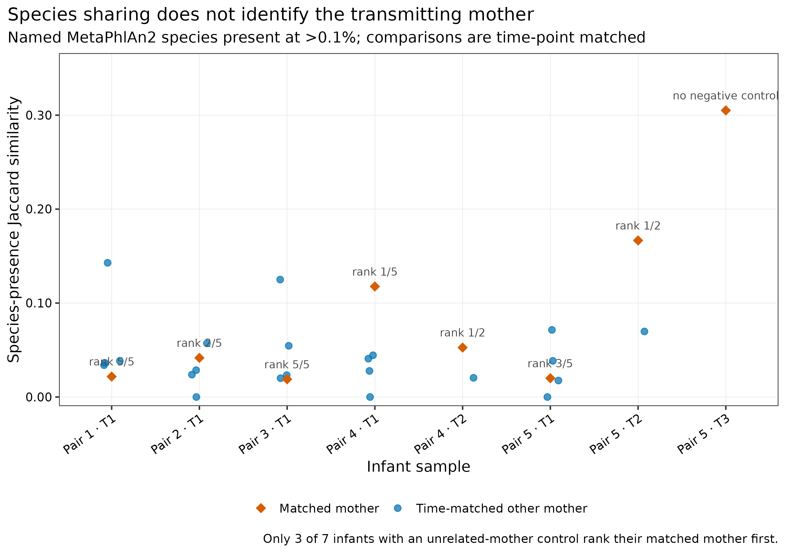
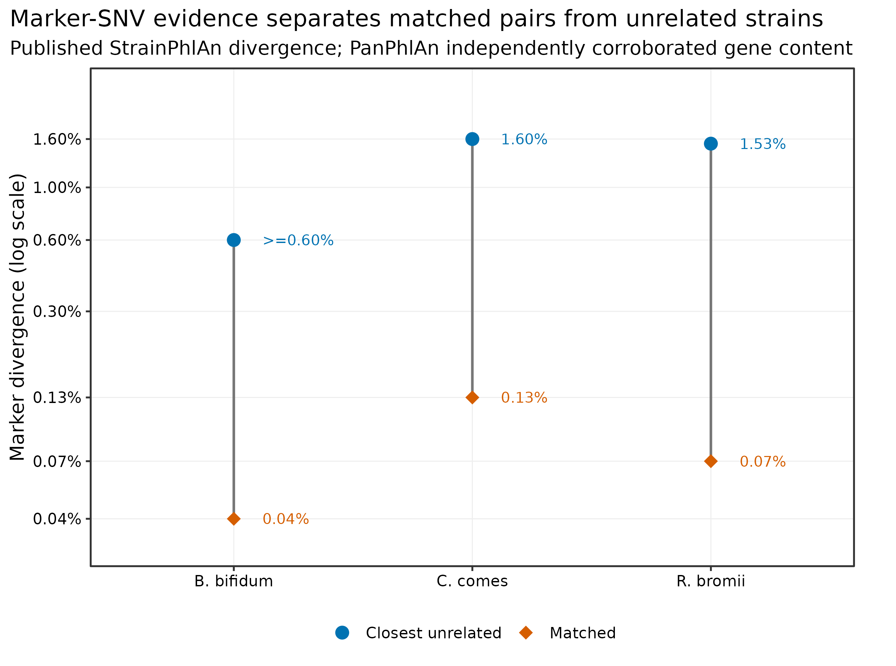
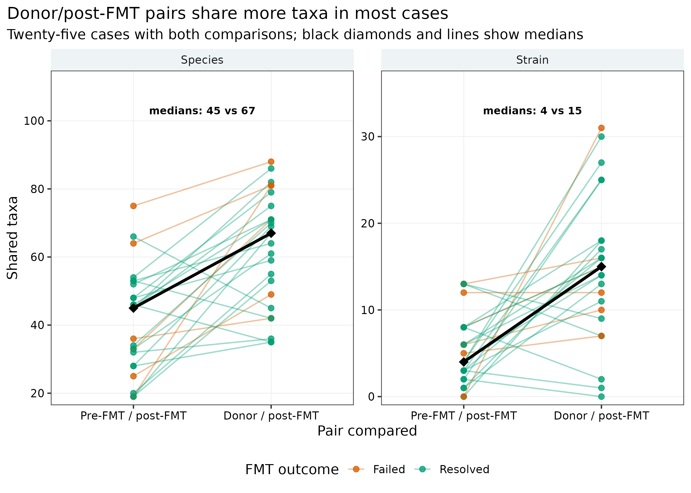
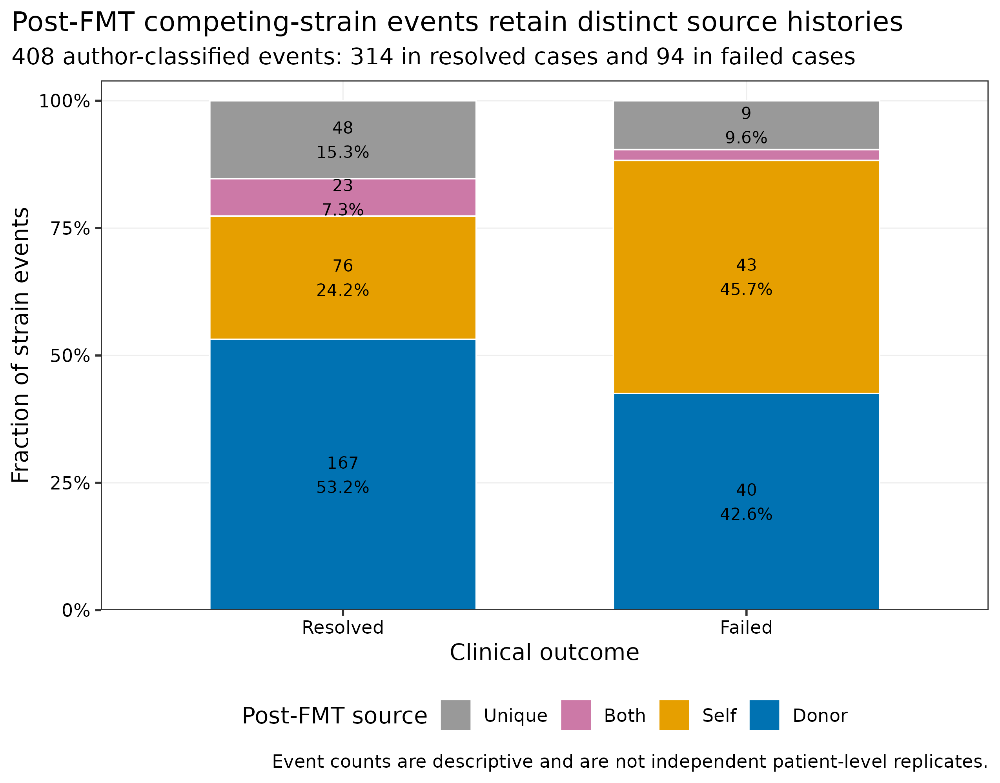
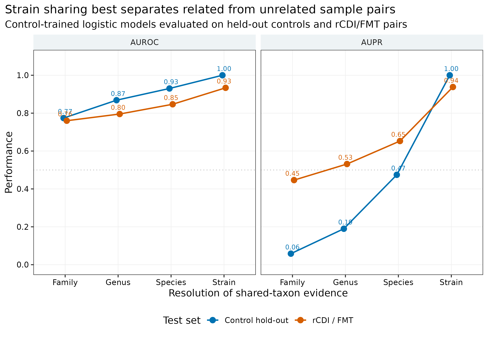

菌株传播与共享：母婴传播、FMT 定植与证据等级
先给结论：“两个人都有同一个物种”只能证明共现，不能证明传播。Asnicar 母婴队列的 24 个真实 shotgun profiles 中，以论文使用的 >0.1% 作为命名物种 presence 门槛后，8 个婴儿—匹配母亲的共享物种数中位数为 2，22 个同时间点婴儿—其他母亲组合的中位数同样为 2；在 7 个至少有一位其他母亲可作负对照的婴儿中，匹配母亲只有 3/7 次取得最高 Jaccard similarity。真正把证据推进到菌株层的是 species-specific marker SNV：论文报告的三个母婴事件中，匹配对 divergence 为 0.04%–0.13%，最近的非匹配菌株为至少 0.60%–1.60%，并由 PanPhlAn gene repertoire 交叉支持。即便如此，原研究仍明确承认共同环境来源未被排除 (Asnicar 等 2017年)。传播结论至少需要“同菌株 + 足够 callable overlap + 时间方向 + 无关配对/环境负对照”；FMT 的 engraftment 还需要移植后持续检出，而不是一次阳性。
开放补充表重分析实测每次 3.21–3.29 秒、峰值 RAM 0.073–0.074 GiB，完整工作目录约 4.4 MB；准备 1 CPU core、1 GB RAM、20 MB 磁盘、1 分钟即可。若从 FASTQ 重新生成 SameStr SNV profiles，论文报告 SameStr 本身平均增加约 4.3 CPU minutes/sample，但前置 QC、去宿主和 MetaPhlAn marker alignment 才是主要 I/O；单批建议 8–32 cores、32–64 GB RAM，磁盘至少覆盖压缩 FASTQ、SAM/BAM 与临时文件总量，百样本项目通常需要数百 GB。没有服务器时，直接使用 data/small/53-strain-transmission-frozen/ 中的校验表重画统计图；不要用低覆盖 laptop 结果放宽阈值后宣称传播。
共享信号需要独立的时间和来源证据才能谈传播；共同暴露或共同来源仍可能解释相似性。
菌株共享与传播，差在哪些证据？
母婴分支锚定 Asnicar 等的 Figure 2 与 Figures S3–S5：StrainPhlAn marker trees 给出 nucleotide-level sharing，PanPhlAn 用 gene repertoire 作独立维度的支持 (Asnicar 等 2017年; Truong 等 2017年)。FMT 分支锚定 Podlesny 等的 Figures 1、3、4 以及 Tables S6–S8：SameStr 用 maximum variant profile similarity（MVS）在 donor、pre-FMT recipient 和 post-FMT recipient 之间追踪 dominant 与 subdominant strains (Podlesny 等 2022年)。
先看“种水平相似为何不够”。每个婴儿都与同一名义时间点可用的全部母亲比较；橙色菱形才是配对母亲。
再把分辨率提升到 marker SNV。纵轴是 divergence 而不是 identity，并用对数尺度避免 0.04% 与 1.60% 被压在同一条线附近。
SameStr 论文把“相关样本对”与“无关样本对”当作可检验目标。仅看 family、genus 或 species 都会产生较多背景共享；strain resolution 在 held-out controls 与独立 rCDI/FMT 数据上均有更高 AUROC/AUPR。
下载、按成员校验并登记来源
同种只说明两个样本进入了同一个粗坐标
若样本 A 与 B 检出的命名物种集合分别为 S_A、S_B，binary Jaccard similarity 为：
[ J(A,B)=. ]
成年人之间本来就共享常见 gut species；同一物种又可包含大量彼此独立的 strains。Jaccard 高可以来自饮食、年龄、地理、药物和数据库覆盖，也可以仅因某些常见物种高丰度。它适合筛候选 source-recipient pairs，不足以指定传播者。
Engraftment 比 transmission 多一层“持续存在”
一次 post-FMT 阳性可能是短暂 passage、死菌 DNA 或阈值附近波动。稳健的 engraftment 定义应预注册最短随访期、至少几个 post time points、是否要求连续检出，以及 coverage/overlap gates。若只保留最后一次 post-FMT 样本，能做的是 case-wise snapshot，不应改写成完整 colonization trajectory (Smillie 等 2018年; Podlesny 等 2022年)。
ROOT="$PWD"
WORK="work/article53"
conda run -n metagenome-strain-transmission-2026.07 \
python scripts/prepare_article53_transmission.py \
--project-root "$ROOT" \
--work-dir "$WORK"
column -ts $'\t' "$WORK/asset-manifest.tsv"
cat "$WORK/run-contract.json"准备脚本从 Europe PMC 取两篇 JATS XML 和母婴 supplementary bundle，从 Springer static content 只取 168,598-byte 的 FMT workbook，不下载夹带视频的大型附件包。所有 XML/XLSX 都在反序列化前核对 size 与 SHA-256。
常见 gut species 在无关个体间也大量共享。先做 unrelated-pair null，再进入 SNV；species abundance 或 Bray–Curtis 相似不能替代 strain call。
先用 species table 做失败得很有价值的负对照
“同菌株”必须同时看相似度与可比较区域
SameStr 在物种特异 marker alignment 中保留达到最低 allele fraction 的多个等位基因。对两个样本 i 与 j，MVS 可写成：
[ _{ij} = {_k I(k)}. ]
原论文用两道联合门槛调用 shared strain：
MVS ≥ 0.999；- jointly covered marker positions
≥5,000 bp。
只报 99.9% 而不报 overlap 是不完整的。若仅比较 80 bp，100% identity 也没有足够证据；反过来，100 kb callable overlap 上的 99.99% 才更有说服力。inStrain、StrainPhlAn 与 SameStr 的 similarity 定义、参考坐标和 coverage gate 不同，阈值不能跨工具照搬 (Olm 等 2021年; Truong 等 2017年; Podlesny 等 2022年)。
Table S2 同时包含 kingdom 到 strain 的多层行。只保留 taxonomy 末级为 s__、没有 t__、且不是 *_unclassified 的 247 个命名物种；relative abundance 严格大于 0.1% 才记为 present。每个 infant 只与相同 T1/T2/T3 的 mothers 比较，避免把发育时间与 source 身份混在一起。
conda run -n metagenome-strain-transmission-2026.07 \
python scripts/summarize_article53_transmission.py \
--project-root "$ROOT" \
--work-dir "$WORK"
column -ts $'\t' \
"$WORK/summary/mother-infant-sharing-summary.tsv"
column -ts $'\t' \
"$WORK/summary/mother-infant-rank-sensitivity.tsv" | head主分支输出的前几行长这样：
Threshold Infant Mother Matched SharedSpecies Jaccard
>0.1% MV_FEI1_t1Q14 MV_FEM1_t1Q14 True 1 0.021739
>0.1% MV_FEI1_t1Q14 MV_FEM2_t1Q14 False 2 0.043478
>0.1% MV_FEI1_t1Q14 MV_FEM4_t1Q14 False 6 0.142857这不是“分析失败”，而是一个必要的 falsification step：若连匹配 source 都不能由 species sharing 从背景人群中稳定分出，species overlap 就没有传播特异性。
检查 1：species presence threshold 改变结果，但不挽救 source identification
| Presence gate | 匹配母亲 Jaccard 中位数 | 其他母亲中位数 | 匹配母亲排第一 / 7 |
|---|---|---|---|
| >0% | 0.0769 | 0.0604 | 2 |
| >0.01% | 0.0811 | 0.0451 | 4 |
| >0.1% | 0.0471 | 0.0351 | 3 |
| >1% | 0.0161 | 0.0000 | 4（其中 2 个是并列第一） |
门槛越高，低丰度噪声减少，同时也丢失真正共享的低丰度物种。>1% 时两个“第一名”只是全部 candidate mothers 的 similarity 都为 0，不能算 source identification。主分支沿用原论文在相关段落使用的 >0.1%，而四个门槛全量保留在 sensitivity table。
低丰度 source strain 可能低于 5× coverage。baseline negative 必须附 detection limit；必要时增加深度、targeted validation、culture/isolate 或多个 pre time points。

把论文报告的 marker-SNV 证据单独登记
同菌株仍不自动等于“由 A 传给 B”
shared strain 是对称关系，(AB)；传播是带方向的事件，(AB)。方向至少要靠时间设计建立：
- source 在 recipient 首次检出前已经携带该菌株；
- recipient 基线为阴性或携带不同菌株；
- 传播后有一个以上时间点重复检出；
- 同 household、food、water、clinic、donor batch 等共同来源被采样或进入模型；
- unrelated pairs、跨 household pairs 和批次阴性对照不出现同样高的 sharing rate。
母婴研究天然提供“母亲早于婴儿”的方向，但父亲、照护者、医院、乳汁、食物与家庭环境仍可能是未采样来源。FMT 的 donor、recipient baseline 与 post-FMT 形成更强的三角设计；若 donor/post 匹配而 pre/post 不匹配，才支持 donor-derived strain。
母婴 supplementary tables 没有发布可直接重算 Figure 2 的 per-marker alignments。因此不能从 species abundance workbook “推回”99.96% identity。解析器在固定 JATS XML 中断言原文数值后，生成独立 provenance table：
column -ts $'\t' \
"$WORK/summary/published-mother-infant-strain-evidence.tsv"| Species | Matched divergence | Closest non-matched divergence | Independent support |
|---|---|---|---|
| B. bifidum | 0.04% | ≥0.60% | PanPhlAn Figure S5 |
| C. comes | 0.13% | 1.60% | PanPhlAn Figure S5 |
| R. bromii | 0.07% | 1.53% | PanPhlAn Figure S5 |
表内 ReportedP 是原论文报告值，不是用补充 XLSX 重算的 p 值。三个事件不能当作独立外部验证；PanPhlAn 与 StrainPhlAn 虽使用不同特征层，仍来自同一批样本。
检查 2：marker divergence 的“远近”必须有队列背景
B. bifidum 匹配母婴 0.04% divergence，而其他 infant strains 至少 0.60%；C. comes 为 0.13% 对 1.60%；R. bromii 为 0.07% 对 1.53%。比值很大，但不是全物种通用 cut-off：不同 species 的 mutation rate、recombination、marker diversity 与 reference representation 不同。最稳妥的策略是在每个 species 内用 unrelated pairs 构造 empirical null，再预注册 similarity 与 overlap gate。
Asnicar 分析使用当时尚处于 early release 的 StrainPhlAn，alignment 为 MUSCLE 3.8.1551，tree 为 RAxML 8.1.15，GTRCAT 且 seed -p 1234；PanPhlAn 参数为 --min_coverage 1 --left_max 1.70 --right_min 0.30。今天可用 StrainPhlAn 4 或 SameStr 重跑，但新版数据库、marker universe 与 mixed-strain handling 已改变；新版结果是升级分析，不是原图的字节级复现。
99.99% identity 在几十 bp 上没有足够证据。图、表与 Methods 同时报告 similarity 定义、overlap、coverage、base quality、allele fraction 和 marker database。

检查 SameStr 的相关/无关负对照与 FMT 三角设计
column -ts $'\t' \
"$WORK/summary/relatedness-classifier-performance.tsv"
column -ts $'\t' \
"$WORK/summary/fmt-casewise-sharing-summary.tsv"
column -ts $'\t' \
"$WORK/summary/fmt-source-event-summary.tsv"Table S6 的 strain-level classifier 在 control hold-out 上 AUROC/AUPR 均为 1.00，在 rCDI/FMT 上为 0.9337/0.9380。Table S7 的 25 个完整 cases 中，pre/post 与 donor/post 共享菌株数中位数分别为 4 与 15；donor/post 高于 pre/post 的病例为 19，低于的为 5，另有 1 个相等。双侧 exact sign test 为 0.00661，但它只是对该 case table 的描述性重分析，不替代随机化 FMT 因果试验。

Table S8 的 408 个 author-classified competing-strain events 包含 207 donor、119 self、25 both 与 57 unique。纯 donor 事件全部满足 donor/post 的 MVS≥0.999 + overlap≥5 kb、且不满足 pre/post gate；纯 self 反之；纯 unique 两边都不满足。“both”表示复杂的竞争菌株历史，不应强行用一对布尔条件重编码。

检查 3：AUPR 暴露 species sharing 的假阳性背景
control hold-out 的 species-level AUROC 已达 0.9302，看似不错，但 AUPR 只有 0.4745；strain level 的两项均为 1.00。到了 rCDI/FMT，species AUROC/AUPR 为 0.8469/0.6528，strain 为 0.9337/0.9380。相关 pairs 在全部 pairs 中稀少时，AUPR 比 AUROC 更直接反映“一个 shared call 有多可信”。传播工具只报 ROC、不给 precision-recall 与 unrelated negatives，会掩盖常见物种造成的 false positives。
检查 4：FMT 的 donor signal 不等于临床疗效机制
25 个完整 cases 的 donor/post shared strains 中位数为 15，pre/post 为 4；species 层分别为 67 与 45。Table S8 的 resolved cases 有 314 个事件，其中 donor 167（53.2%）；failed cases 有 94 个事件，其中 donor 40（42.6%）。这些事件不是 408 位患者：同一 case、species 和时间点结构产生重复，resolved/failed 又只有 18/6 个 cases 进入该事件表。不能对 408 行做普通 chi-square 后写“donor engraftment 导致治愈”。
更稳的临床模型以 case 为单位，保留 treatment protocol、antibiotics、bowel preparation、donor、baseline diversity、sequencing depth 和 follow-up time；多时间点用 mixed model、survival/colonization model 或预定义 case-level endpoint。菌株来源比例可以是机制中介候选，但不是随机化 exposure。
母婴可共同接触食物、家庭成员和环境；FMT cases 可共享 donor、病房、批次和处理流程。能采样的共同来源直接采，不能采的写入 limitation 并限制为“transmission-compatible”。
一次阳性最多支持 transfer-compatible detection。预注册持续时间和重复时间点；对 replacement、temporary passage 与 dropout 分开编码。

新增样本需要哪些独立的菌株证据？
原论文使用 MetaPhlAn2 2.6.0、db_v20 / mpa_v20_m200、SAMtools 0.1.19 与 kpileup 1.0。现代 SameStr 1.2025.111 已支持 MetaPhlAn SGB 与 mOTUs markers，samestr align 已弃用；FASTQ 应先独立 QC，再由 MetaPhlAn 用 --samout 保存 marker alignments (Podlesny 2025年)。
从去宿主 FASTQ 到 shared-strain table 的服务器命令
先固定软件源码；commit 对应 SameStr 1.2025.111：
git clone https://github.com/danielpodlesny/SameStr.git
cd SameStr
git checkout ada3ca5a30ce3e0d869fb304182916e302f7ee56
conda env create -f environment.yml
conda activate samestr
pip install .
samestr --versionMetaPhlAn alignment database与 SameStr marker database 必须来自同一 release。下面沿用该 commit README 中固定的 mpa_vJun23_CHOCOPhlAnSGB_202307 坐标；数据库文件应另记 SHA-256。
DB=mpa_vJun23_CHOCOPhlAnSGB_202307
THREADS=24
metaphlan clean/SAMPLE_R1.fastq.gz,clean/SAMPLE_R2.fastq.gz \
--bowtie2db db/metaphlan \
--index "$DB" \
--input_type fastq \
--nproc "$THREADS" \
-t rel_ab \
--bowtie2out "align/SAMPLE.${DB}.bowtie2.bz2" \
--samout "align/SAMPLE.${DB}.sam.bz2" \
-o "align/SAMPLE.profile.txt"
# 从与 alignment 完全相同的 pkl + marker FASTA 生成 SameStr DB
samestr db \
--markers-info "db/metaphlan/${DB}.pkl" \
--markers-fasta "db/metaphlan/${DB}.fna.bz2" \
--db-version "$DB" \
--output-dir "db/samestr_$DB"
samestr convert \
--input-files align/*.sam.bz2 \
--marker-dir "db/samestr_$DB" \
--nprocs "$THREADS" \
--min-base-qual 20 \
--min-vcov 5 \
--output-dir snv/convert
samestr merge \
--input-files snv/convert/*.npz \
--marker-dir "db/samestr_$DB" \
--nprocs "$THREADS" \
--output-dir snv/merge
samestr filter \
--input-files snv/merge/*.npy \
--input-names snv/merge/*.names.txt \
--marker-dir "db/samestr_$DB" \
--clade-min-n-hcov 5000 \
--clade-min-samples 2 \
--marker-trunc-len 20 \
--global-pos-min-n-vcov 2 \
--sample-pos-min-n-vcov 5 \
--sample-var-min-f-vcov 0.10 \
--nprocs "$THREADS" \
--output-dir snv/filter
samestr compare \
--input-files snv/filter/*.npy \
--input-names snv/filter/*.names.txt \
--marker-dir "db/samestr_$DB" \
--nprocs "$THREADS" \
--output-dir snv/compare
samestr summarize \
--input-dir snv/compare \
--tax-profiles-dir align \
--marker-dir "db/samestr_$DB" \
--aln-pair-min-overlap 5000 \
--aln-pair-min-similarity 0.999 \
--output-dir snv/summary逐样本循环 MetaPhlAn 时，sample_id、source_id、role、time、household、donor_batch 与 library_batch 必须来自独立 metadata，不能靠文件名临时猜。若改为 mOTUs marker coordinate，所有样本、数据库和阈值敏感性分支一起重跑，不能把两套 marker universe 的 MVS 拼在一张表。
检查 5：共同来源、替换与 detection limit
Asnicar 原文明确指出 shared environmental source 不能排除，并观察到部分早期 maternal strains 在后续时间点被替换。SameStr 论文的模拟与经验分析提示可靠 strain detection 通常需要目标 strain genome coverage >5×；在 5 Gbp、平均 genome 2.5 Mbp 的示例假设下，约对应 0.25% community abundance (Podlesny 等 2022年)。低于 detection limit 的 baseline “阴性”不能证明 recipient 原先没有该菌株。
升级后的 source model至少保留四种不确定状态：
donor-derived：donor/post 过 gate，pre/post 不过 gate；self-persistent：pre/post 过 gate，donor/post 不过 gate；both-compatible：两边均有证据，可能存在共同 strain 或多菌株；unresolved：两边都未过 gate，可能是真正新来源，也可能只是 source 低覆盖。
unresolved 不应直接命名为“environment-derived”。没有环境样本时，来源就是未知。
MVS 是对称比较。母婴、同住者或 FMT 的方向来自 sampling time、role 与 baseline，而不是相似度本身。
Table S8 的行共享 case、species 和时间结构。临床推断在 case/subject 层建模，并处理 donor 与 repeated measures。
复跑、作图、保存与结果核对
五级证据及可允许的表述
| 等级 | 最低证据 | 最多可以写到哪里 |
|---|---|---|
| 1 | 同一 species | “co-occurred / was shared at species level” |
| 2 | 同一 strain；SNV similarity + callable overlap/coverage | “shared strain” |
| 3 | source 先出现、recipient 后出现，有 baseline | “transmission-compatible direction” |
| 4 | unrelated + household/environment/food controls | “direct-source inference strengthened” |
| 5 | 多时间点 persistence + 独立 genome/gene-content 支持 | “durable transmission / engraftment” |
五级表用于约束语言，不是把五项勾选后自动产生因果结论。任何一级都可能受 reference bias、strain mixture、测序深度、共同来源和样本标签错误影响；最弱的一环决定最终措辞。
python3 scripts/run_article53_transmission.py \
--project-root "$ROOT" \
--work-dir "$WORK" \
--environment metagenome-strain-transmission-2026.07
Rscript scripts/plot_article53_transmission.R \
--work-dir "$WORK" \
--output-dir figures
python3 scripts/freeze_article53_transmission.py \
--project-root "$ROOT" \
--work-dir "$WORK" \
--output-dir data/small/53-strain-transmission-frozen
python3 scripts/validate_article53_transmission.py \
--project-root "$ROOT" \
--frozen-dir data/small/53-strain-transmission-frozen \
--output-dir results/53-strain-transmission \
--figure-dir figures \
--chapter chapters/53-strain-transmission.qmd主运行与 replay 分别耗时 3.21 和 3.29 秒，18 个汇总对象逐文件 byte-identical。Python hash seed 固定为 0；线程数固定为 1；所有作图随机位置固定 set.seed(20260753)。
检查 6：数据库升级与隐私
Podlesny 原分析固定 MetaPhlAn2 2.6.0 与 db_v20 / mpa_v20_m200，保留 ≥10% alleles、Q20 bases、≥40-bp mappings，marker 两端各裁 20 nt，并把超过平均 coverage 5 SD 的位置清零。当前 SameStr 1.2025.111 支持更新的 MetaPhlAn SGB 和 mOTUs coordinates (Podlesny 2025年)。更新数据库通常提高覆盖，却会改变 clade IDs、marker lengths、callable overlap 和 empirical null；Methods 必须写数据库 identity，不能只写“SameStr default”。
菌株 sharing graph 还可能重识别个人、发现样本调换或暴露未声明的家庭/临床关联。发布 pairwise calls 前应去除直接标识符，限制细粒度时间地点字段，检查知情同意是否覆盖 microbiome-derived identification，并把 contamination/mislabelling 结果走项目的临床与数据治理流程。
MetaPhlAn2 db_v20 与现代 SGB database 的 marker universe 不同。先在新版 unrelated controls 上重新校准 specificity，再谈跨版本复现。
限定共享、定植和传播措辞
Published-output reanalysis template
Mother-infant species sharing was reanalysed from the openly licensed MetaPhlAn2 taxonomic profile in Asnicar et al. (Table S2; 24 profiles; XLSX SHA-256: 12b5dc05b3237b65512c3221812dffef9b749287f46af32ca9d983835c0e9144). We retained 247 named species-level rows, excluding strain-level and unclassified-species rows, and defined presence as relative abundance >0.1%. Each infant was compared with all mothers available at the same nominal time point using binary Jaccard similarity; mother identity was not used in feature construction. No pairwise inferential test was performed because comparison rows share infants and mothers. Published mother-infant marker divergences were transcribed only after assertion against the checksum-locked JATS XML (SHA-256: 1891a7c22bcb3616e77dd94757f1ef6be6b2a04bd7271a0deea1c4a87a8d17bf) and were not presented as recomputed values. FMT shared-taxon counts, relatedness-classifier performance and competing-strain source labels were reanalysed from Podlesny et al. Tables S6–S8 (XLSX SHA-256: 0f51d05906a2a574970070cab4302204c0f04c2a040bce5d923cd921d91ce757). The original SameStr analysis used MetaPhlAn2 v2.6.0 with db_v20/mpa_v20_m200, retained alleles at ≥10% frequency, and called shared strains at MVS ≥99.9% with ≥5,000 overlapping marker positions. Workbook/XML parsing used Python 3.12.13, openpyxl 3.1.5 and lxml 6.0.2. Deterministic processing and plotting used seed 20260753.
Results template
At a >0.1% species-presence threshold, matched mother-infant pairs and time-matched unrelated mother-infant pairs shared a median of 2 species in both strata; median Jaccard similarities were 0.0471 and 0.0351, respectively. The matched mother ranked first for only 3 of 7 infants with at least one unrelated-mother control. In contrast, three published StrainPhlAn-supported mother-infant events showed within-pair marker divergence of 0.04%–0.13%, compared with ≥0.60%–1.60% for the closest reported non-matched strains, with PanPhlAn gene-repertoire corroboration. In the SameStr benchmark, strain-level relatedness classifiers achieved AUROC/AUPR values of 1.000/1.000 in held-out controls and 0.9337/0.9380 in rCDI/FMT data. Among 25 FMT cases with both comparisons, the median numbers of shared strains were 4 for pre-FMT/post-FMT and 15 for donor/post-FMT pairs. These observations support strain sharing and donor-compatible engraftment but do not alone exclude unsampled common sources or establish clinical causality.
Raw-data SameStr insert
Quality-controlled, host-depleted paired-end reads were aligned to the MetaPhlAn mpa_vJun23_CHOCOPhlAnSGB_202307 marker database with SAM output enabled. SNV profiles were generated with SameStr v1.2025.111 (commit ada3ca5a30ce3e0d869fb304182916e302f7ee56), requiring base quality ≥20 and vertical coverage ≥5. Marker ends were trimmed by 20 nt; alleles below 10% within-position frequency were removed. Shared strains required MVS ≥0.999 across ≥5,000 jointly covered marker positions. Database files and all sample-role/time metadata were checksum-locked. Donor-derived, recipient-persistent, both-compatible and unresolved states were assigned from donor/post-FMT and pre-FMT/post-FMT calls according to a prespecified longitudinal design.
换到自己的研究中，先检查哪些条件？
最少准备三类对象：
- 去宿主 shotgun FASTQ：每个 source、recipient baseline 和 post-transfer time point 都有独立文件；保存 reads、bases、host-removal rate 与 library batch。
- 方向性 metadata：
sample_id、subject_id、source_id、role、collection_time、household/room、donor_batch、antibiotic、clinical_outcome。 - 共同来源与负对照：unrelated pairs、同 batch 阴性对照；母婴研究尽量加入父亲/照护者/乳汁/食物/家庭环境，FMT 加入 donor aliquot、处理批次和病房背景。
先预注册输出单位：
- 一行一个
sample × species的 coverage/callability table； - 一行一个
sample pair × species的 MVS、overlap、shared-strain call； - 一行一个
recipient × species × post time的 source state； - 一行一个 subject/case 的 engraftment endpoint。
推荐的判读顺序是：
- species 共现只生成候选 comparisons；
- 过滤 base/mapping quality、marker ends、coverage outliers 与低频 alleles；
- 在 unrelated pairs 上校准每个数据库版本的 empirical false-positive rate；
- 联合 MVS 与 overlap 调用 shared strain；
- 用 source/baseline/post 时间三角赋予方向；
- 要求预定义的多时间点 persistence 才称 engraftment；
- 用 gene-content、MAG/isolate、culture 或 targeted sequencing 交叉验证最重要事件；
- 对共同来源、低覆盖阴性与多菌株 ambiguity 保留不确定状态。
如果只有 source 与 recipient 各一个横断面样本，最高只能得到“shared strain”；如果没有 unrelated negatives，不能量化该数据库和队列中的 specificity；如果没有 recipient baseline，不能区分 donor-derived 与原有低丰度 strain；如果没有随访，不能称 engraftment。
图中应该保留哪些信息？
五张图各自承担一层证据，不把所有信息挤进一张 network：
- species-negative-control 图把匹配母亲与同时间点其他母亲放在同一纵轴，并直接标 rank；
- marker-divergence 图用 log scale，同时显示 matched 与 closest unrelated；
- classifier 图把 AUROC 与 AUPR 分面，避免用一个漂亮 ROC 遮蔽类别不平衡；
- FMT paired plot 用每位 case 的连线与黑色中位数，不用 bar mean 掩盖方向相反的病例；
- source composition 明确分母是 strain events，并在 caption 中禁止当独立患者。
颜色采用色觉友好的 blue/orange/green/magenta/gray；图题、坐标、图例和 annotation 全为英文。每张图同步导出 PDF、350 dpi PNG 与 LZW TIFF：
save_pub(
p_classifier,
"figures/53-relatedness-classifier",
width = 210, height = 145, units = "mm", dpi = 350
)实跑绘图环境为 R 4.4.1、ggplot2 3.5.2、dplyr 1.1.4、readr 2.1.5、tidyr 1.3.1、scales 1.3.0 与 patchwork 1.3.2。
回到最初的问题
物种共享只能证明共现；传播证据还需要菌株级相似、足够 callable overlap、时间方向与无关配对负对照。
参考文献
- 母婴垂直传播与原始限制：(Asnicar 等 2017年)。
- StrainPhlAn marker-SNV population genomics：(Truong 等 2017年)。
- SameStr 方法、负对照与 FMT 输出：(Podlesny 等 2022年)。
- FMT strain engraftment 的独立研究：(Smillie 等 2018年)。
- current SameStr software snapshot：(Podlesny 2025年)。
- genome-wide population comparison的替代坐标：(Olm 等 2021年)。